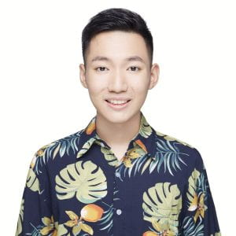

Rui-Jie Zhu 朱芮捷
Ph.D. Candidate, UC Santa Cruz
I am on the 2026 industry job market and expect to graduate this year. Please feel free to contact me.
I work on LLM pre-training, across both sides of the problem: pre-training architectures (looped language models, linear attention, and other efficient alternatives to standard Transformers) and pre-training data (synthetic data, and how data interacts with architecture and training dynamics at scale). I led the end-to-end training of Ouro (7.7T tokens on 1024×H100), and spent a year doing pre-training research at ByteDance Seed.
Find me on GitHub, Google Scholar, and X (Twitter).
Email: ridger@ucsc.edu
Research
What I care about most is touching scaling with my own hands. My personal scaling trajectory covers three orders of magnitude in compute:
- 1×1019 FLOPs: SpikeGPT (216M params, 10B tokens, 2023)
- 2×1021 FLOPs: Matmul-free LM (2.7B params, 100B tokens, 2024)
- 4.6×1023 FLOPs: Ouro (2.6B×4, 7.7T tokens, 2025)
Ouro is a looped language model where the same 2.6B parameters are reused across multiple passes, enabling a model trained from scratch to reach the quality of an 8B-scale industrial model at a fraction of the parameter count. I led the entire process, from infrastructure and pre-training to mid-training and post-training.
For each of these runs, I watched every checkpoint from the very first to the last, witnessing a model go from random to intelligence. That is what I am really enjoying. The journey is the reward.
Behind these runs sit two threads of work:
I build scalable and efficient sequence modeling architectures as alternatives to standard Transformers:
- Looped language models that reuse parameters across depth (Ouro), trading parameter count for iterative computation and latent reasoning
- Linear attention with expressive recurrent states (I joined RWKV and GSA, and co-led a systematic study of hybrid linear attention)
- Matmul-free and neuromorphic language modeling (Matmul-free LM)
Architecture only pays off when the data feeding it is right, so I work on the data side with equal weight:
- For Ouro, I built a data curation & validation pipeline and worked hands-on across pre-training, long-context, and mid-training data, building the 7.7T token recipe behind a 2.6B looped model that matches the quality of an 8B scale industrial model
- Synthetic data for pre-training via reformulation (MGA), where we validated two things: data rewritten by a small model can help train larger models, and reformulated synthetic data yields better returns under repeated epochs than repeating raw data
- How data, architecture, and training dynamics interact at scale
During my year at ByteDance Seed, this two-sided view was put into industrial practice, spanning looped language models, concept models, and pre-training data synthesis:
- Scaling Latent Reasoning via Looped Language Models
- A Systematic Analysis of Hybrid Linear Attention
- Dynamic Large Concept Models: Latent Reasoning in an Adaptive Semantic Space
- Reformulation for Pretraining Data Augmentation
Earlier in my Ph.D. I worked on spiking neural networks, contributing to snnTorch and SpikingJelly and building SpikeGPT. That is where my obsession with efficient architectures began.
Please refer to publications for the full list.
Talks & Media
- Scaling Latent Reasoning via Looped Language Models, ASAP Seminar #48
- LLMs Don't Need More Parameters. They Need Loops., YouTube
- 利用Loop语言模型扩展Latent Reasoning, FAI × UCSC（Bilibili）
Experience & Education
- Research Intern, ByteDance Seed, LLM pre-training
- Jul. 2023 to 2026: Ph.D. Student, UC Santa Cruz, advised by Jason K. Eshraghian
- Sep. 2019 to Jul. 2023: B.S., University of Electronic Science and Technology of China
This website is adapted from Tianyu Gao's design, which is in turn adapted from Gregory Gunderson.